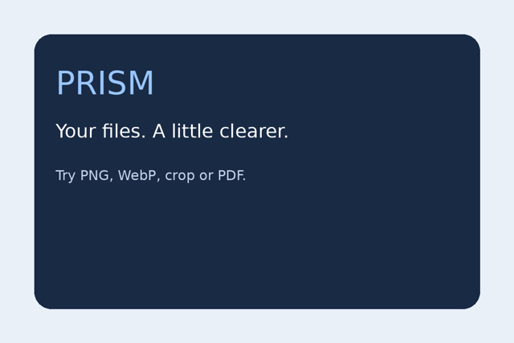
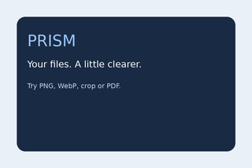
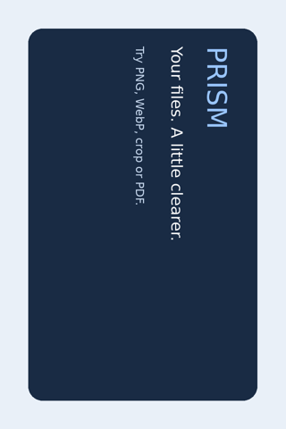
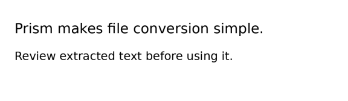

png Verified · 0.07 s
sample-image - png.png: 1200 x 800, RGB


Actual outputs from the conversion engine on Windows. Originals were checked with SHA-256 and remain unchanged. PDF previews include every output page. This report is a saved demonstration, not a substitute for Explorer interaction testing.
sample-image - png.png: 1200 x 800, RGB
sample-image - jpg.jpg: 1200 x 800, RGB

sample-image - webp.webp: 1200 x 800, RGB

sample-image - resize.png: 320 x 213, RGB

sample-image - rotate_image.png: 800 x 1200, RGB

sample-image - compress_image.png: 1200 x 800, RGB
sample-image - crop.png: 200 x 140, RGB
sample-image - images.pdf: 2 pages

sample-document - merged.pdf: 6 pages


sample-document - extract.pdf: 2 pages


sample-document - rotate_pdf.pdf: 3 pages


sample-document - page 1.pdf: 1 pages | sample-document - page 2.pdf: 1 pages | sample-document - page 3.pdf: 1 pages
Open output 1 Open output 2 Open output 3


sample-document - page 1.png: 1241 x 1754, RGB | sample-document - page 2.png: 1241 x 1754, RGB | sample-document - page 3.png: 1241 x 1754, RGB
Prism sample - page 1 Use this file to test merge, page order and text extraction. Prism sample - page 2 Use this file to test merge, page order and text extraction. Prism sample - page 3 Use this file to test merge, page order and text extraction.
sample-text - text.pdf: 1 pages
Prism makes file conversion simple. Review extracted text before using it.
sample-scan - images.pdf: 1 pages

Prism makes file conversion simple. Review extracted text before using it.